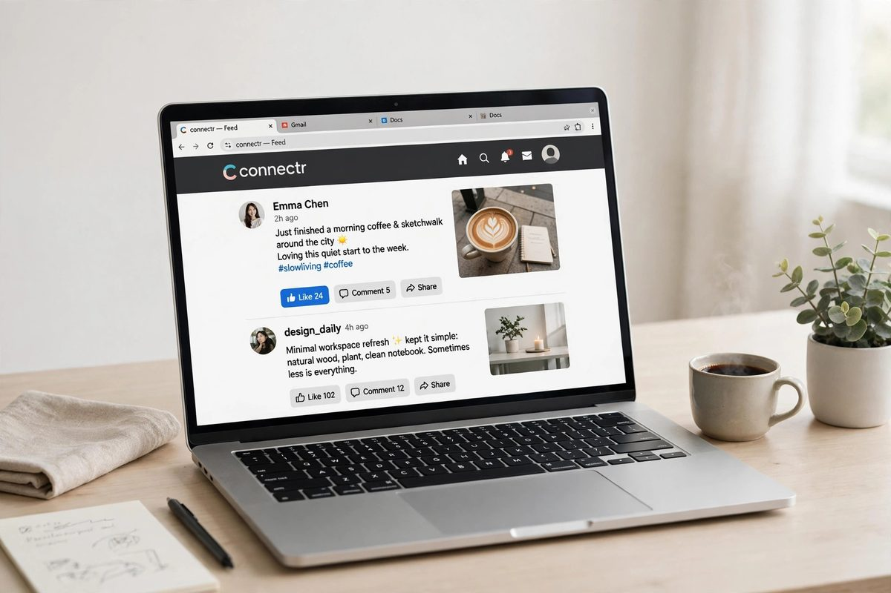

How to Save Instagram Videos Without Installing Any App
Keep Instagram videos using only your browser and Instagram's own features, with nothing to install.
You do not need to install a downloader app to keep track of Instagram videos. The built-in features work in the browser and in the official app, and they are the options that keep working after Instagram updates its systems. This guide explains the browser-only methods, what each one can do, and how to stay safe if you ever use a web-based tool.
Save in the browser
Open instagram.com in your browser, sign in, and tap the bookmark icon on any post or Reel to save it. Saved items appear in your profile under the Saved tab, and you can organise them into collections. This works on any computer, it needs no installation, and it is private. The limitation is the same as in the app: saved items are bookmarks that need an internet connection, not files on your computer. For keeping track of videos, that is usually enough.
Bookmark the link instead
If you do not want to use Instagram's Save feature, bookmark the post's link in your browser. Create a folder called Instagram Saved and add links with clear names. This works even when you are not signed in, for public posts, and it keeps the link under your control. Paste the link into a notes app with a sentence about why you kept it, so you can find it again later. A link is often more useful than a file, because it always points to the current version of the post.
Web downloaders: the honest picture
Websites that promise to download any Instagram video work by fetching the video file from Instagram's servers. Some work, some do not, and many are covered in fake download buttons and pop-ups. A legitimate web tool never asks for your Instagram password, never asks you to install anything, and never asks you to disable your ad blocker. If a site does any of those things, close the tab. Even the honest ones break regularly, because Instagram changes how videos are delivered.
When nothing browser-only works
Some videos cannot be saved as files through the browser at all, because the creator disabled downloads or the video is private. In that case the practical alternatives are to save the post inside Instagram, to share the link with yourself, or to ask the creator for the original file. Installing a desktop program will not unlock a video Instagram has restricted, and programs that claim to do so are often malware. The browser-only route is not a limitation; it is the boundary of what can be done safely and lawfully.
Use Instagram's data download
Instagram lets you download a copy of everything you have posted, which is the most complete backup a user can get. Go to Settings, then Accounts Centre, then Your information and permissions, and request a download of your information. Instagram will prepare a file containing your photos, videos, comments, and messages, and email you a link when it is ready. The process can take hours for a large account, and the link expires, so download the file promptly. This is the proper way to keep your own content: it gives you the original files Instagram stored, with your captions and dates, and it does not involve any third-party tool. Do it once a year, store the file on an external drive, and you will never lose your photos if your account has a problem. It is free, it is official, and it is the backup most people never think to make.
Frequently Asked Questions
Can I save videos without an app?
Yes. Instagram's Save feature works in the browser and the app, and it needs no installation.
Are web downloader sites safe?
Many are not. They are often ad-heavy and some ask for your login. Never enter your Instagram password on one.
Why do web downloaders stop working?
Instagram changes its systems regularly, which breaks third-party tools until their developers update them.